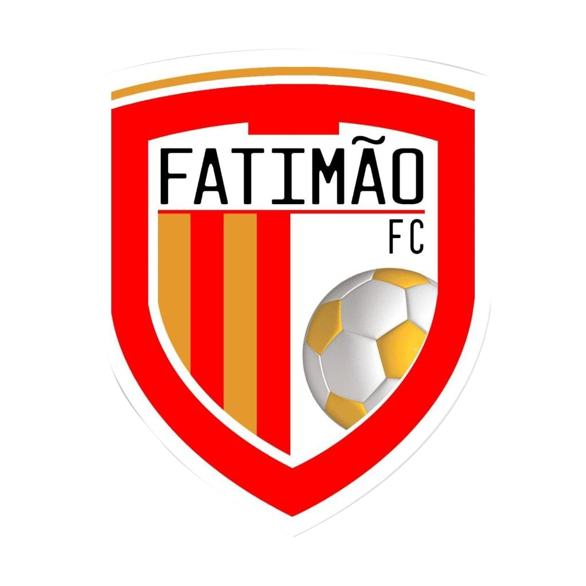

<mat-toolbar color="primary">
  <button
    mat-icon-button
    class="example-icon"
    aria-label="Example icon-button with menu icon"
  >
    
  </button>
  <span class="nome-campeonato">Nome do Campeonato </span>

  <button
    mat-icon-button
    class="example-icon"
    aria-label="Example icon-button with heart icon"
  >
    <mat-icon>admin_panel_settings</mat-icon>
  </button>
</mat-toolbar>
